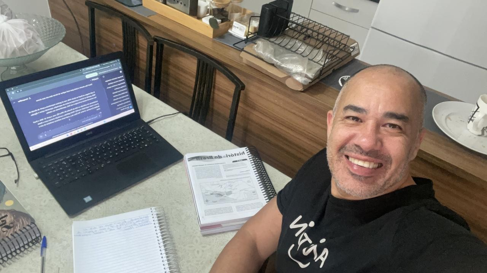

Especialista em História para ENEM e Ensino Fundamental
Quero Estudar AgoraProfessor de História com foco em clareza, didática e preparação estratégica para provas. Aulas personalizadas para Ensino Fundamental e preparação para o ENEM.
🎓 Curso concluído:
Do período colonial até a República, com foco em provas e concursos.
Revoluções, Idade Média, Antiguidade e temas essenciais para o ENEM.
Conteúdo estratégico e resolução de questões comentadas.
Aulas individuais com foco na dificuldade do aluno.